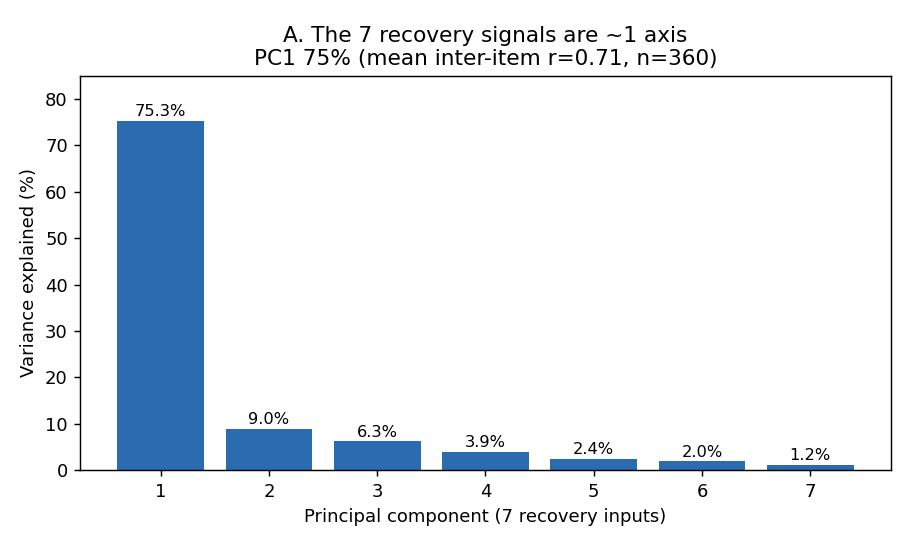
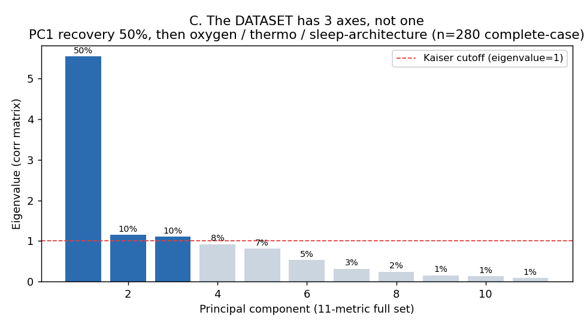
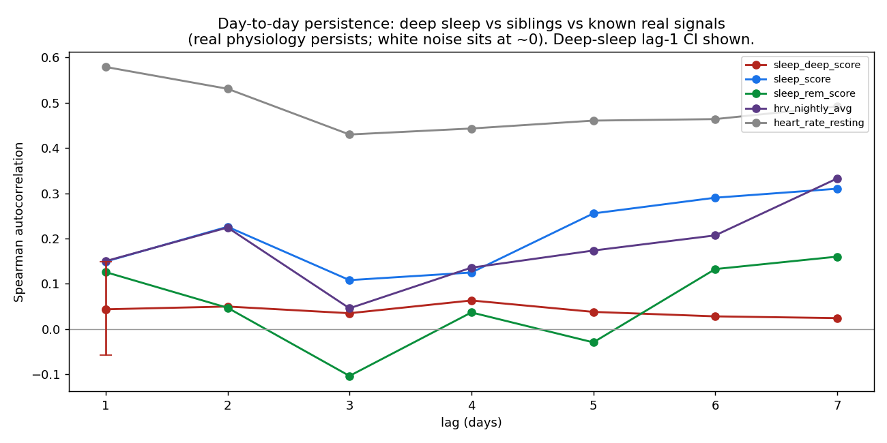
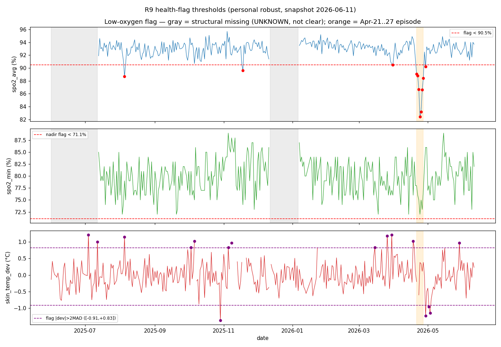

Before any score, two structural facts shaped everything downstream: the wrist
metrics are not independent dashboards — they collapse onto a single recovery↔stress
axis — and a few metrics that look like recovery signals aren’t. Here is the ground the rest
is built on.
confident
The autonomic core is complete; SpO₂ has two structural gaps.
Across the year, the five autonomic signals — resting HR, average HR, stress,
body battery, respiration — have 0% missing days, so their
baseline is unconditional. SpO₂ is missing ~19% of days, but not at random: two structural
blocks. Those gaps must read as “unknown,” never as health events.
Per-metric coverage timeline. Each red tick = a missing day. The five
autonomic rows are blank (complete); SpO₂ shows two solid blocks; HRV / sleep / skin-temp
are lightly scattered. 357 days, 2025-06 → 2026-05.Evidence & stats run · multi-baseline + flag-thresholds
The SpO₂ blocks are the device-setup era (2025-06-01 → ~07-12) and a
mid-series block (~2025-12-12 → 2026-01-06) — together they are the entire 19%.
The 0-BPM wrist-contact artifact is filtered upstream by the parser and never reaches the
analysis mart, so remaining nulls are true nulls.
One signal, measured seven ways
The single most consequential structural finding: the recovery metrics co-move so tightly
that they are better understood as one underlying state than as seven independent readouts.
confident
Almost everything collapses onto one recovery↔stress axis.
A single principal component explains ~74–75%
of the variance across the seven recovery inputs, and the pairwise correlations form one tight
block. Stress, HR avg, resting HR and respiration load on the stress pole; HRV, body battery
and sleep on the recovery pole. This is why a single composite score is defensible —
and why combining the correlated inputs buys reliability rather than double-counting.
Pairwise Spearman correlations, regrouped. The recovery block (top-left,
bracketed) is one coherent, tightly-coupled axis (|r| up to 0.85); the four off-axis metrics
tie to it near zero. 373 days.

The seven recovery inputs are essentially one axis. PC1 alone explains
75.3% of variance (mean inter-item r 0.71); every later component is a long tail.Evidence & stats run · axis-dimensionality + multi-baseline
The axis, by strength of coupling (|r| ≥ 0.5, Spearman):
HR avg ↔ Stress
+0.84
Respiration ↔ HRV
−0.84
Body Battery ↔ HRV
+0.82
Body Battery ↔ Sleep
+0.80
Stress ↔ Body Battery
−0.80
Resting HR ↔ HRV
−0.76
Dimensionality & reliability. Within the seven inputs: PC1 75.3%, PC2 9.0%,
mean inter-item r 0.71 (n=360). Cronbach α = 0.94 and split-half composite reliability 0.94
— both above the best single item (~0.90). Combining correlated signals raises reliability;
it is not redundant double-counting.
What is not a recovery signal
Equally important is what we ruled out. Three metrics that intuitively feel like
recovery — deep sleep, overnight SpO₂, REM — carry no recovery-trend information and were
deliberately kept out of the score.
confident
The dataset holds three axes — but only one is a recovery trend.
Widen from the seven recovery inputs to all eleven metrics and ~3 statistical
axes appear: recovery (~50%), then a separate oxygen axis and a
thermoregulation / sleep-architecture axis. The off-axis metrics aren’t noise — they
are their own weaker signals, which is exactly why they must not be folded into recovery.

The full dataset has three axes, not one. PC1 (recovery) ~50%, then two
more components clear the eigenvalue->1 cutoff (oxygen; thermo / sleep-architecture). Only
the first is a smooth recovery trend. 280 complete-case days.Evidence & stats run · axis-dimensionality
79% independent of sleep score, but its independent part vs the autonomic composite is r −0.03 — sleep-architecture detail, no recovery information
confident
Deep-sleep score behaves like noise.
It has essentially no day-to-day persistence and it ignored the
November crash — staying ~90 while overall sleep fell to ~41. Benchmarked against signals we
know are real, it carries no usable recovery trend.

Day-to-day persistence (autocorrelation), lags 1–7. Deep-sleep sits flat
at ~+0.04 (its lag-1 CI touches zero) while resting HR persists at +0.58 — deep-sleep looks
like noise next to a known-real signal. 357 days.Evidence & stats run · sleep-deep-signal-or-noise
Lag-1 autocorrelation
+0.044, CI [−0.057, +0.149] (spans 0); flat across lags 1–7
vs resting HR / HRV
+0.58 / +0.15
Ceiling censoring
29% of nights pinned at the 100 cap
Through the Nov regime
deep median 90.5 while overall sleep crashed to 41.5
Scope. Low autocorrelation can’t fully separate measurement
noise from genuine volatility — the confident verdict is “not usable for trends,” not
“proven noise.”
confident
Overnight SpO₂ is a health flag, not a recovery signal.
A pre-registered test asked whether SpO₂ predicts next-day recovery
once today’s recovery is known. It doesn’t — both partial correlations straddle zero and fall
short of the confirm bar. SpO₂ stays as a point-in-time low-oxygen flag, never a recovery input.
SpO₂ adds no recovery information. Left: near-flat same-day SpO₂-min vs
recovery (r −0.02). Right: both partial-correlation CIs straddle zero and miss the
pre-registered confirm threshold (±0.15) — labeled redundant. n=287.Evidence & stats run · spo2-incremental-value
Partial Spearman, SpO₂(D) vs recovery(D+1) | recovery(D)
· spo2_min
−0.066, CI [−0.214, +0.095]
· spo2_avg
+0.140, CI [−0.014, +0.263]
Confirm bar
|r| ≥ 0.15 with CI excluding 0 — neither reaches it (n=287)
Caveat. spo2_avg’s upper CI (+0.26) does not fully exclude a
weak effect; the confident claim is the rejection of a usable recovery signal.
How the year moved
The recovery axis is not stationary — it moved through distinct regimes. But the axis’s
structure stayed fixed even as its values swung, which matters a great deal
for how the score is normalized.
provisional
The year moved through three regimes.
A severe multi-system low-recovery crash (November 2025), a strong recovery
plateau (January–March 2026), and a milder late-April softening. November is the only
severe, sustained episode in the dataset — which is why much of the recovery work that
follows is honestly n-of-1.
One year, three regimes — read the bottom 14-day aggregate-deviation
curve: a sharp November peak, a Jan–Mar trough (best recovery), and a smaller late-April
bump. 357 days.Evidence & stats run · multi-baseline-recharacterization
Provisional. Regime boundaries are sensitive to composite
weighting and 7-day smoothing; the December tail in particular is soft. The crash itself is
unambiguous.
confident
It is the same axis in every regime.
Between the November crash, the Jan–Mar plateau, and the rest of the year, what
changes is the metric values, not the axis structure. The principal-component
loadings are near-identical everywhere — so one static weight set is
legitimate and regime-aware scoring is not warranted.
PC1 loadings by regime. Per-metric loadings are visually identical across
the Nov crash, the Jan–Mar plateau, and the rest of the year (Tucker congruence 0.993–0.999).
373 days.Evidence & stats run · multi-axis-loading-stability
PC1 Tucker congruence
0.993–0.999 across all regime/quarter windows (bootstrap CI floors ≥ 0.980)
Pole signs
identical in every window
PC1 variance share
70–79% per window
Provisional secondary. Two couplings attenuate (without
reordering) in the Sep–Nov crash quarter: respiration↔body-battery −0.52 vs −0.82..−0.87,
and HRV↔sleep +0.46 vs +0.78. Structure holds; coupling strength softens in the crash.
Health flags
Separate from recovery, two off-axis signals earn their own flags — and the way they must be
calibrated is itself a finding.
confident
Two health flags — and they must be personal, not textbook.
A low-oxygen flag and a thermoregulation flag, each calibrated to this person’s
own distribution. Absolute clinical cutoffs are useless here — an absolute SpO₂-min < 88%
rule would fire on 98.7% of this user’s nights.

Personally-calibrated health flags. spo2_avg with its ~90.5% flag line
catches the real Apr 21–27 low-oxygen episode as a block (red); skin-temp deviation flags
outside ±~0.9 °C; grey marks structural-missing days. 373 days.
# Personally-calibrated, descriptive flags (no diagnosis)
low_oxygen = spo2_avg < personal_median − 2.5·MAD# ≈ 90.5% · 3.6% of nights
thermoreg = skin_temp_dev outside [−0.91, +0.83] °C# 4.4% of days
missing_spo2 = "unknown"# a third state — never "clear"
Evidence & stats run · spo2-skintemp-flag-thresholds
Low-oxygen flag
spo2_avg < ~90.5% (median − 2.5·MAD) — 3.6% of covered nights; catches all 7 days of the Apr 21–27 episode
spo2_avg beats spo2_min
min is integer-coarse, catches only 2/7 episode days; demoted to nadir detail
Thermoregulation flag
skin-temp deviation outside [−0.91, +0.83] °C — 4.4% of days; independent of oxygen (did not fire in April)
Why personal
absolute spo2_min < 88% fires on 98.7% of this user’s nights